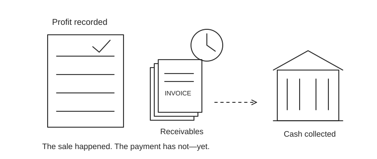

Ten foundations, with worked examples
These are original learning notes and examples, not a replacement for the full CFA curriculum. Work each example before opening another resource.

1. Cash flow and statements
The income statement records performance over a period; the balance sheet is a snapshot; the cash-flow statement explains movements in cash. Accrual profit and cash can diverge.
Worked example: Revenue of ₹120 lakh and expenses of ₹90 lakh create ₹30 lakh profit. If ₹20 lakh of those sales remain uncollected and everything else is cash, operating cash is only ₹10 lakh.
Try it: Map a credit sale through receivables, profit and cash. Then explain what happens when the customer pays.
2. Time value of money
Compare money at the same date. Discount a future amount by the opportunity cost and risk appropriate to the cash flow. Keep currency, inflation basis and timing consistent.
Worked example: ₹121 in two years at a 10% annual discount rate has present value 121 / 1.10² = ₹100. A higher discount rate reduces present value.
Try it: Build a five-year cash-flow schedule in Excel and Python; reconcile the results.
3. Capital allocation
Net present value is discounted future cash inflows minus the investment. It turns “this project grows revenue” into “this project creates value under these assumptions.”
Worked example: Spend ₹100 today and receive ₹60 at each of the next two year-ends. At 10%, NPV = −100 + 60/1.1 + 60/1.1² = ₹4.13.
Try it: Stress revenue, cost and discount rate. Name the assumption that makes NPV negative.
4. Equity valuation
A DCF values expected cash flows; a multiple compares a price to an earnings, revenue or balance-sheet measure. A precise spreadsheet cannot remove uncertain assumptions.
Worked example: A perpetual dividend of ₹5 growing at 3%, with required return 8%, implies ₹5 / (0.08−0.03) = ₹100 if ₹5 is next year’s dividend. The model needs required return above growth.
Try it: Explain why a high-growth firm can deserve a higher multiple, and why that still does not establish a good investment.
5. Fixed income
A plain bond promises coupons and principal. Discount them at the appropriate yield. For ordinary fixed-rate bonds, price generally falls as yield rises. Credit and liquidity add further risks.
Worked example: A one-year zero-coupon bond paying ₹100 is worth ₹95.24 at 5% yield. Modified duration of 4 implies roughly a 2% price decline for a 0.5 percentage-point yield rise, before convexity.
Try it: Compare a short and a long bond under the same rate shock. State what duration omits.
6. Risk and diversification
Risk is not one number. Volatility measures dispersion; drawdown describes losses from a prior peak; expected loss addresses a different question. Correlations determine how positions combine.
Worked example: Two equally weighted assets with 20% volatility and zero correlation give portfolio volatility √(0.5²×0.2² + 0.5²×0.2²) = 14.14%.
Try it: Show how the same portfolio changes when correlation rises to one. Explain why a stress scenario matters.
7. Credit decisions
Expected credit loss in a simple one-period model is probability of default × loss given default × exposure. A useful lending model must also account for revenue, funding and operating cost.
Worked example: PD 2%, LGD 40%, exposure ₹100,000 gives expected loss ₹800. A higher approval rate is not attractive if marginal losses exceed marginal contribution.
Try it: Plot approval rate against expected contribution. Disclose your pricing and loss assumptions.
8. Derivatives and hedging
A forward locks a future transaction price. An option gives its holder a right rather than an obligation. Payoff, profit and cash required are different quantities.
Worked example: A call with strike ₹100 has payoff ₹20 when the asset finishes at ₹120. If its premium was ₹7, profit is ₹13 before financing and fees.
Try it: Draw a call and a put. Describe who bears the loss and why a hedge can still have basis risk.
9. Economics and alternatives
Inflation, rates and exchange rates affect revenue, funding and valuation. Alternative assets add different exposures, but can involve illiquidity, fees and valuation uncertainty.
Worked example: A 6% nominal return with 4% inflation gives real return 1.06/1.04−1 = 1.92%. A private-fund mark that barely moves does not prove low economic risk.
Try it: Connect one macro change to a company’s cash flow. Separate business risk from accounting smoothness.
10. Ethics and analytical judgment
A recommendation needs a reasonable basis, honest limitations and appropriate handling of conflicts and confidential information. Model performance does not excuse unreliable data or misleading communication.
Worked example: If you tried 100 strategies and show only the winner, the audience cannot assess selection risk. Document the search, untouched test set and unfavorable results.
Try it: Write a limitations paragraph your manager could use in a real decision meeting.
Go deeper with OpenStax finance, MIT Finance Theory I and the current CFA learning outcomes. Then attempt the original diagnostic.